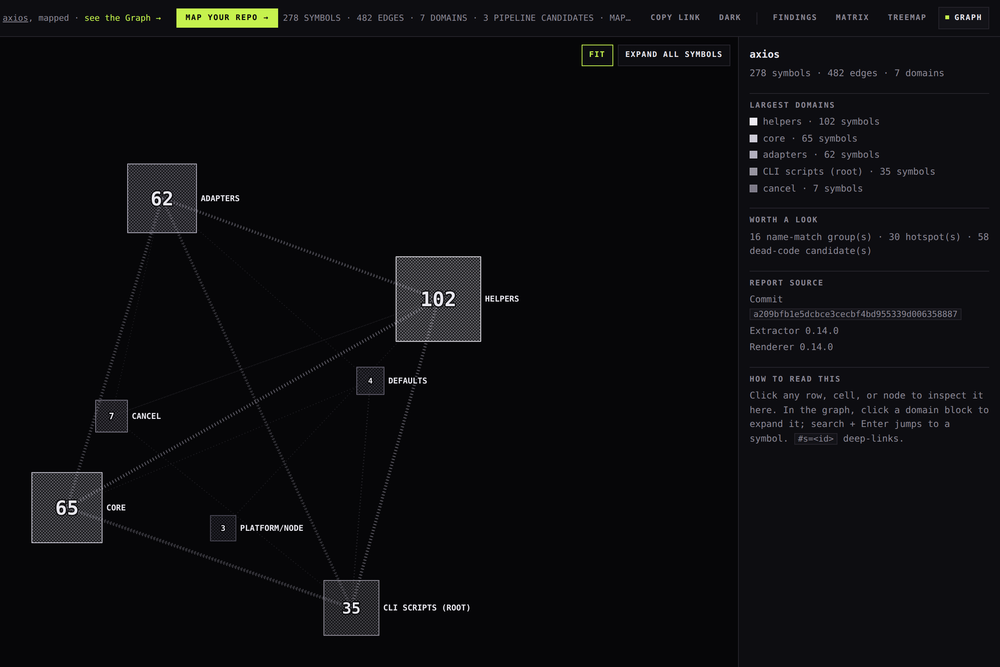

Mapping axios: 3 confirmed duplications in a 50M-download library
We pointed codeweb at axios — the HTTP client downloaded ~50M times a week — read-only, no setup, one command. Measured at axios v1.18.1 (a209bfb1); the pinned command below reproduces these numbers exactly.

The unedited generated report — click around it live.
The map, in one command
node scripts/run.mjs path/to/axios/lib --target axios
# 274 symbols · 374 edges · 8 domains · 17 overlap candidatesDomains auto-clustered from the code's own structure: helpers, core, adapters, cancel, defaults, platform/node, platform/common, root.
17 candidates produced 3 confirmed duplications
codeweb compares each candidate with the actual function bodies by using token-shingle similarity. The check classified the 17 candidates as follows:
3 body-confirmed
The functions contain the same logic in two locations. Two pairs are byte-for-byte identical across files.
12 dismissed
The functions have the same name and different bodies. codeweb removed these candidates from the findings.
2 unverified
codeweb leaves these candidates for human review.
Simulate each merge before the edit
codeweb simulates each merge against the regression gate. Two of the three merges would introduce a new dependency cycle. codeweb blocks those merges and recommends a canonical function in a neutral module.
codeweb marks setFormDataHeaders, with a 91% body match, as ready. The gate stays green, and the duplication count decreases by one.